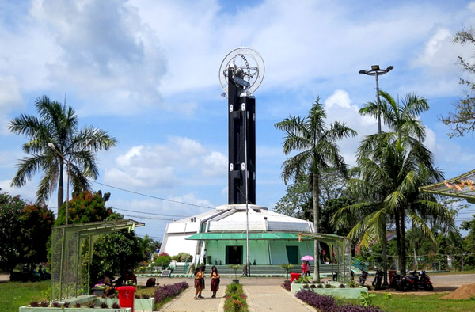
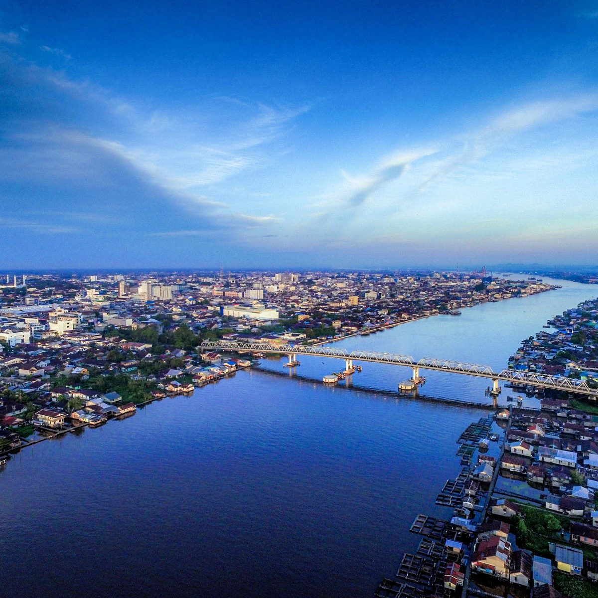
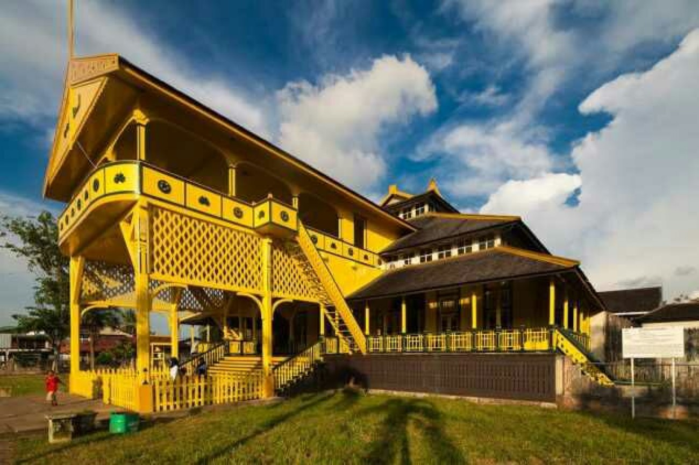
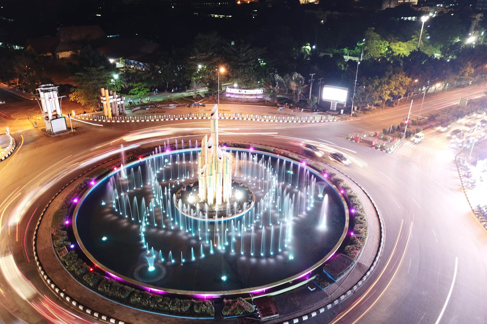
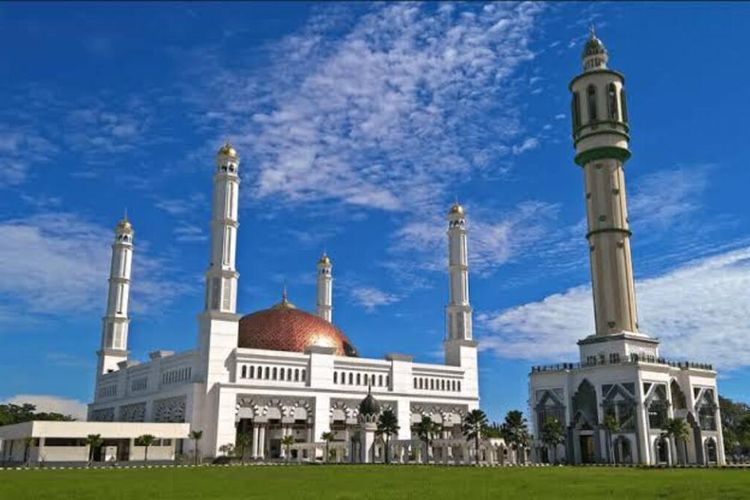
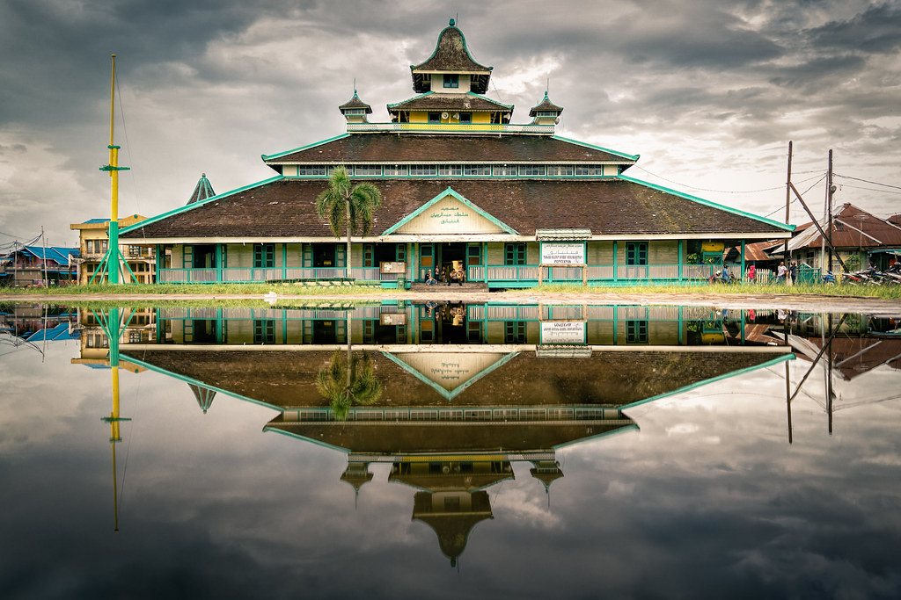
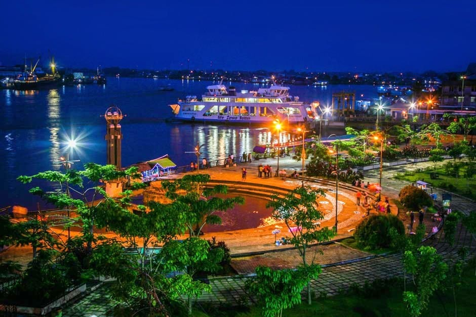
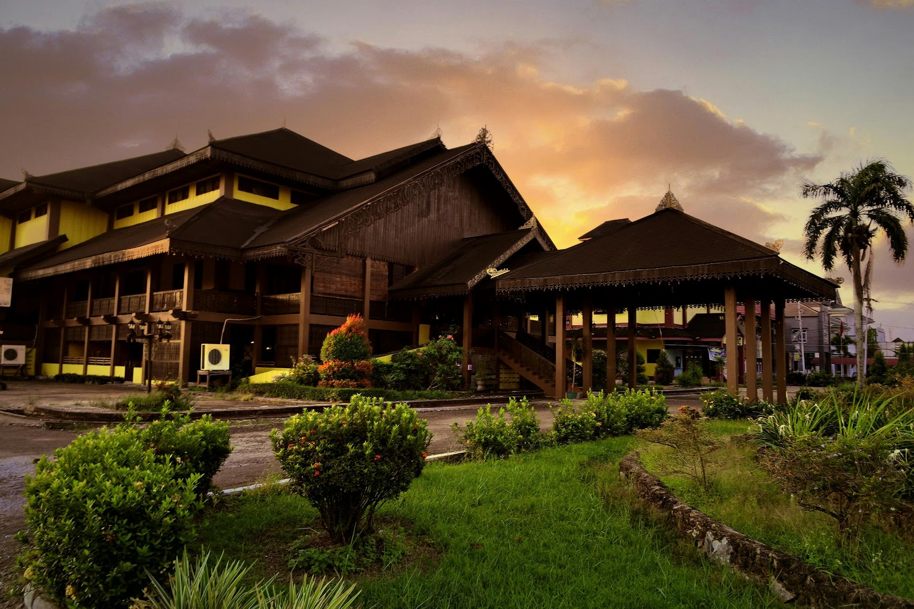
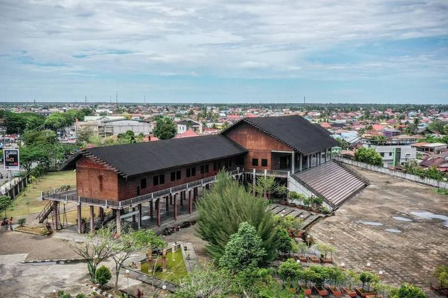
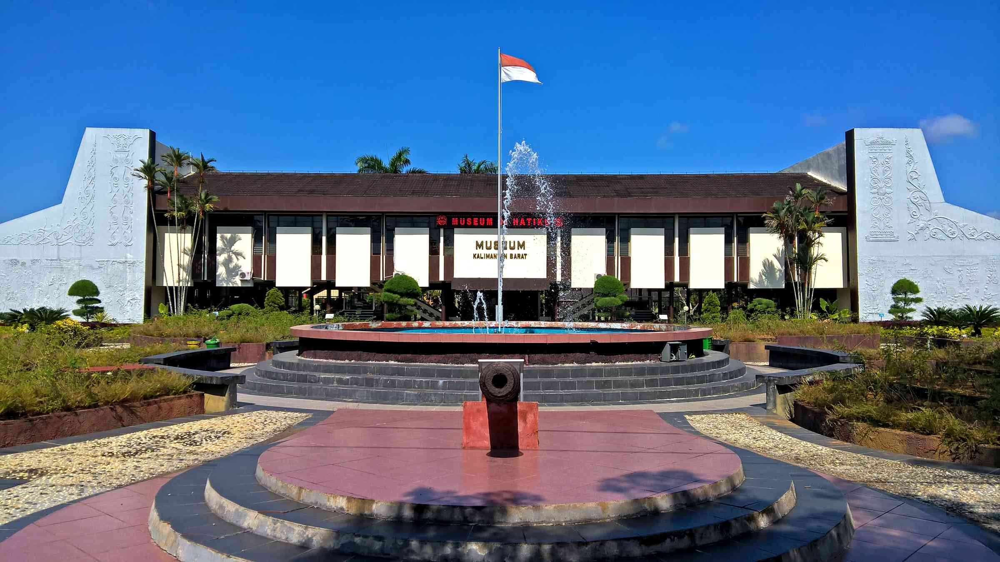

tourist place
Pontianak is famous as the equator city because it is located precisely on the equator line that divides the Earth. Therefore, one of the most distinctive tourist attractions in Pontianak is the Equator Monument. However, not only that, Pontianak also offers a variety of tourism destinations for tourists who want to explore the city.
- Equator Monument
- Kapuas River
- Keraton Kadariah
- Digulis Park/Bambu Runcing Monument
- Masjid Raya Mujahidin
- Masjid Jami Sultan Syarif Abdurrahman
- Taman Alun Kapuas
- Malay Traditional House
- Dayak Traditional House/Rumah Radakng
- West Kalimantan State Museum

The Equator Monument in Pontianak is a significant landmark, located right on the equator, where the Northern and Southern Hemispheres intersect. It symbolizes Pontianak's unique geographic position and offers visitors the chance to stand in both hemispheres simultaneously. This popular tourist destination features educational displays and interactive exhibits, providing insights into the equator's importance and the city's cultural heritage.

The Kapuas River in Pontianak, Indonesia, is the country's longest river and a significant natural asset for the city. It not only divides the city but also plays a crucial role in trade and transportation. Visitors can explore this scenic river, enjoying activities like river cruises and waterside dining while observing the bustling local life that revolves around it.

Keraton Kadariah in Pontianak is a historic palace showcasing traditional Malay architecture and culture. It symbolizes the city's rich history and is a popular attraction for those interested in Pontianak's heritage.

Taman Digulis is a tranquil park, while Tugu Bambu is a bamboo runcing monument in Pontianak, Indonesia. Together, they offer a mix of nature and history, located in the heart of the town, attracting visitors keen to enjoy their cultural and natural significance.

Masjid Raya Mujahidin in Pontianak, Indonesia, is a grand and historically significant mosque. It stands as a symbol of the city's rich Islamic heritage and architectural beauty. With its impressive design and cultural significance, the mosque is a prominent religious and cultural landmark in Pontianak, attracting visitors and worshippers alike.

Unlike Masjid Raya Mujahidin, Masjid Jami Sultan Syarif Abdurrahman is a historically and culturally significant mosque, reflecting the city's diverse heritage through its Malay architectural design. Beyond its role as a place of worship, it stands as a symbol of Pontianak's rich history and cultural identity, and it is also the oldest mosque in Pontianak, making it a popular site for those interested in exploring the city's heritage.

Taman Alun Kapuas is a bustling urban park in Pontianak, Indonesia, offering green spaces, walkways, and a vibrant atmosphere. It's a popular gathering place for locals and visitors, often hosting cultural events and street food vendors, providing a lively and central escape within the city.

Rumah Adat Melayu in Pontianak are traditional Malay houses, known for their unique architecture and cultural significance. They offer insights into the customs, craftsmanship, and way of life of the local Malay community in the city.

Rumah Radakng in Pontianak is a traditional Dayak house, exemplifying the unique architectural and cultural heritage of the Dayak people. It offers a glimpse into their communal living style and intricate woodwork, providing visitors with insights into the Dayak community's traditions and lifestyle in Pontianak.

The Museum Negeri Kalimantan Barat in Pontianak is West Kalimantan's State Museum, housing a diverse collection of cultural and historical artifacts. It offers visitors an opportunity to delve into the region's rich cultural and historical heritage, making it an informative and educational attraction.